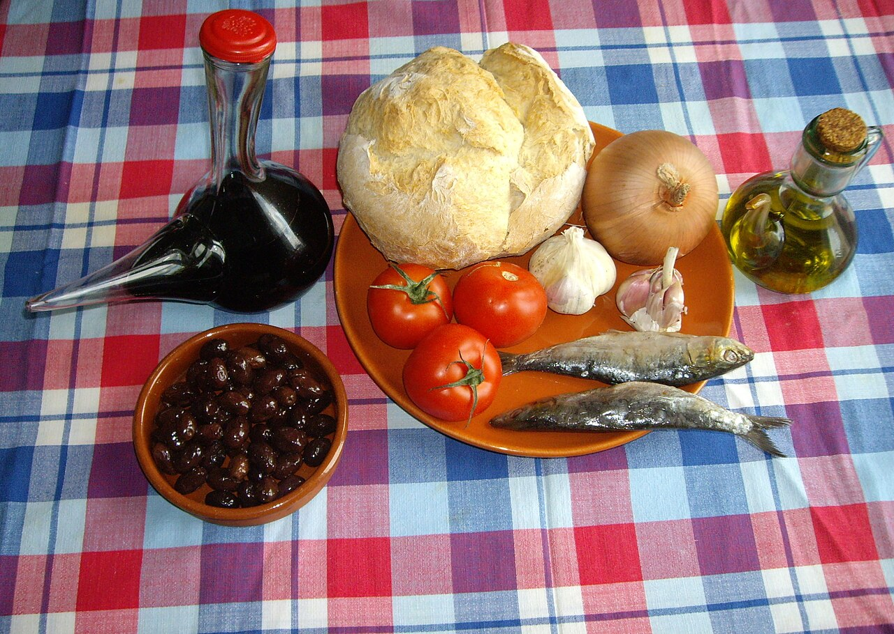
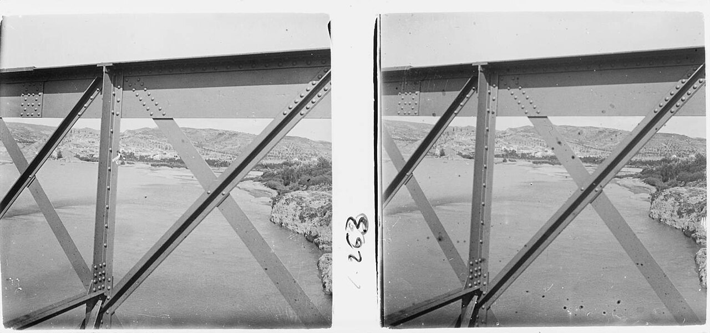

Comer sin llevar nada encima
Hay recetas que se explican por su sabor y otras que se explican por su logística. Esta es de las segundas. Imagina una jornada de recogida de la oliva en enero, a kilómetros del pueblo, o una mañana entera en la barca. Puedes cargar con platos, o puedes hacer que el pan los sustituya.
El nombre lo dice todo: un clot es un hoyo, y eso es lo que se hace con el pan — vaciarlo hasta dejar solo la corteza, convertida en cuenco. Dentro va la comida; al final, el cuenco también se come, empapado de aceite y de todo lo demás. Cero menaje, cero residuo.
Los nombresEl mismo pan, cuatro palabras
Lo fascinante de este plato es que cruzas un río o subes a la comarca de al lado y deja de llamarse igual. En la Ribera d'Ebre es la clotxa, que es el nombre que se ha impuesto. En la Terra Alta y el Baix Ebre le dicen crostó. En Camarles y en los Lligallos, canto de pa. Y en Ascó tienen su propia palabra y su propia receta: la clotxina, que va sin cebolla.
Cuatro nombres para lo mismo no es un capricho lingüístico: es la prueba de que nadie lo inventó. Un plato de autor viaja con su nombre puesto. Este apareció a la vez en muchos sitios porque en todos había el mismo problema que resolver, y cada sitio lo bautizó a su manera.
La recetaLo que hay que hacer, por orden
Paso a paso
1. Se hace una brasa de leña y se espera a que el fuego baje: lo que cocina es el rescoldo, no la llama. · 2. Se asan ahí mismo el tomate, la cebolla y los ajos, a veces envueltos en papel de aluminio. · 3. Se tuesta el pan y se asa la sardina —y la longaniza, si la casa la pone—. · 4. Se parte el pan por la mitad y se vacía la miga con la mano, dejando la corteza entera. · 5. Se deshacen el tomate y la cebolla dentro, se añade la sardina sin espinas ni cabeza y se riega con aceite, sin tacañear.
El pescado es sardina de casco o arengada: la que venía salada en barril y aguantaba meses sin nevera. Y se come con la mano, mezclando el relleno con la miga que se ha sacado al principio. Hay quien la cierra y se la come como un bocadillo, pero la manera de siempre es la primera.


Y luego está lo que le pone cada pueblo
Sobre esa base, las variantes son el verdadero mapa del plato. Garcia y Flix le añaden longaniza. En otros sitios aparecen la baldana de cebolla, las judías, el atún, la panceta curada, la tortilla —de alcachofas, a veces—. El acompañamiento clásico son olivas, trencades o mortes, y vino negro. Antiguamente las olivas también se asaban.
Quién la comíaPayeses, pastores y también pescadores
No era solo comida de campo. La hacían payeses, pastores y pescadores —en el bancal, en la montaña y en la barca—, porque en los tres sitios el problema era el mismo. Se tomaba de desayuno, de segundo desayuno o de comida, aunque lo habitual era por la mañana.
Que esto viene de lejos no es una suposición: los higienistas del siglo XIX ya la documentaron en sus Estudios topográfico-médicos, citándola en Garcia, Móra y Tortosa. Cuando un médico de hace ciento cincuenta años se molesta en anotar lo que come la gente, es que lo comía todo el mundo.
El decliveLo que casi se la lleva por delante
A mediados y finales del siglo XX el plato estuvo a punto de desaparecer, y no por olvido ni por modas: desapareció el trabajo que lo había creado. La industria química, la hidroeléctrica y la central nuclear cambiaron la economía de la comarca, y mucha gente dejó de pasar el día en el campo. Sin jornadas de bancal no hacen falta comidas de bancal.
Lo salvó convertirse en otra cosa: de comida de trabajo pasó a comida de fiesta. Hoy se come en romerías, en el día de la ermita y por Dijous Jarder, el jueves anterior a Cuaresma. En Flix, los bares la sirven el Viernes Santo al acabar el Via Crucis. En Ascó sale por Sant Antoni. En Garcia, en el romiatge de Santa Magdalena, y la preparan los majorals.
La fiestaGarcia, el 15 de noviembre
Desde 2003, la Ribera d'Ebre le dedica una fiesta que va rotando de pueblo en pueblo, organizada por el Consell Comarcal junto con los hosteleros. La vigésimo primera edición se celebra en Garcia el domingo 15 de noviembre de 2026, en la zona de las Piscines-Riu, y el comensal paga un precio simbólico, de uno a tres euros.
Se llama Festa de la Clotxa i de l'Oli, y no por casualidad: en noviembre coinciden el plato y la molienda. Si vas, llegarás justo cuando el aceite nuevo empieza a salir de los molinos — y ese aceite es, literalmente, uno de los ingredientes. Después vienen unas jornadas en las que los restaurantes la ponen en carta.
Y nosotros tambiénLa tercera de la misma familia
Llevamos unos cuantos artículos encontrándonos el mismo patrón. El romesco salió de aprovechar lo que había. El rossejat del Serrallo nació del pescado que no se vendía. Y la clotxa existe porque alguien tenía que comer lejos de casa sin cargar con la cocina a cuestas.
Ninguno se inventó para gustar. Se inventaron para resolver algo, y gustaron después. Por eso, cuando en una visita nos ponen un plato que viene de ahí, lo que miramos no es la ocurrencia del cocinero: es si ha sabido mantenerlo en pie sin convertirlo en una caricatura de sí mismo.
Fuentes: Inventari del Patrimoni Cultural Immaterial de les Terres de l'Ebre (ficha «La clotxa i les seues variants locals»), Turisme i Consell Comarcal de la Ribera d'Ebre, y el libro «La clotxa i la seua festa», de Carme Queralt (2013). El plato figura en el Corpus del patrimoni culinari català. Imágenes: Pastisseta (CC BY-SA 4.0) y Josep Salvany i Blanch (dominio público), vía Wikimedia Commons.